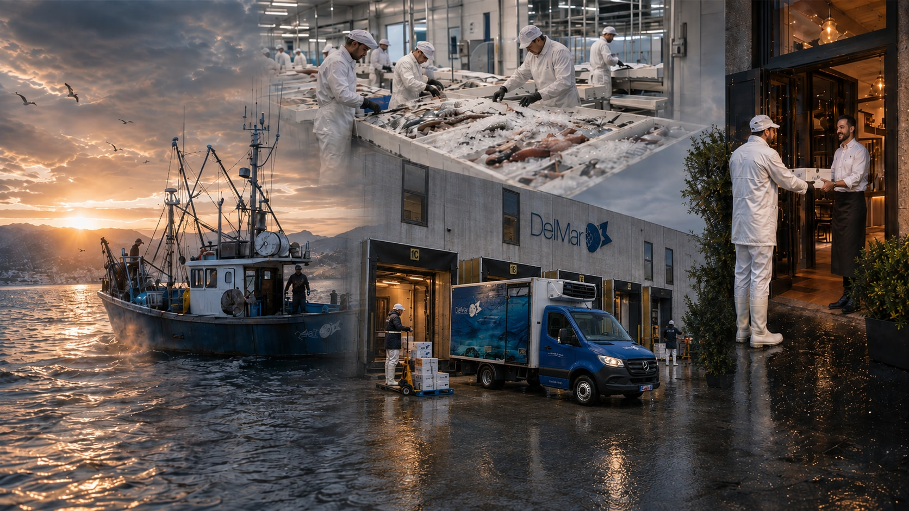
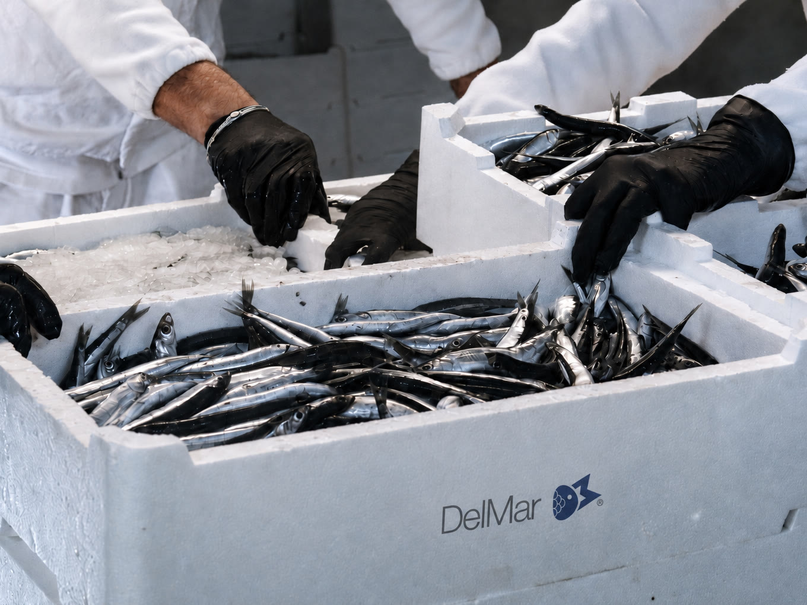
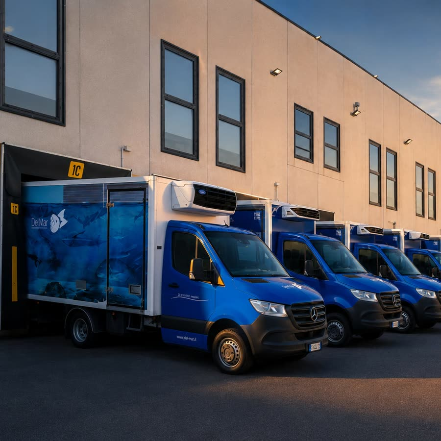
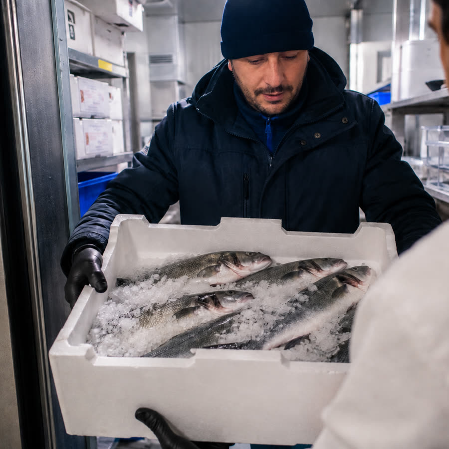

DelMar

in tempo reale ·

Ogni notte selezioniamo solo il meglio: dai pescherecci dell'Alto Tirreno, dai mercati del Mediterraneo e del Nord Europa e, via aerea, dai mari di tutto il mondo. Tutto in un'unica consegna.
Richiedi il listino prezzi
Il nostro vivaio mantiene oltre 2.000 kg di crostacei vivi da ogni mare: astici, aragoste, granchi, king crab. Ogni giorno partono dalle vasche e arrivano vivi nella tua cucina, senza giorni di anticipo: quello che ti serve domani, da noi c'è già.
Richiedi disponibilità
Pesce, verdure, pasta e prodotti da forno: oltre 1.000 pallet di prodotti congelati sempre pronti nel
nostro stabilimento.
Niente cella piena e capitale fermo: ordini ogni giorno il quantitativo esatto
che ti serve, e lo trovi sempre.
Come Lavoriamo
01 · La sera
Ordini aperti fino alle 2 di notte
Un messaggio quando hai chiuso il servizio: scrivi la lista, mandala a voce o fotografa quello che ti manca.

02 · La notte
Scegliamo il pescato per il tuo ordine e lo prepariamo nei nostri laboratori certificati HACCP secondo le richieste della tua cucina: pulito, eviscerato, sfilettato, porzionato.

03 · Prima dell'alba
La merce viaggia sulla nostra flotta refrigerata, non su corrieri terzi. La catena del freddo non si interrompe mai, dal laboratorio alla tua porta.

04 · Entro le 11
Ogni consegna entro le 11 di mattina
I nostri autisti sistemano il pesce direttamente nel tuo frigorifero. Tu apri la cucina e trovi tutto pronto, in tempo per il pranzo.
Da 30 anni anticipiamo le esigenze del settore. Oggi l'intelligenza artificiale incontra la tradizione: ordina in pochi secondi, ricevi il meglio del mare.
Assistente AI · DelMar
Marina è la tua assistente AI su WhatsApp per ordinare i prodotti DelMar. Chatta con lei, registra la tua attività in pochi minuti e fai il primo ordine: se arriva entro le 2 di notte, lo consegniamo entro le 11 del mattino. E fa molto di più — conosce il catalogo completo, ti aggiorna su disponibilità e prezzi in tempo reale, e suggerisce i prodotti giusti per il tuo menù.


Sede · Via Dorsale 13, Massa (MS)
Chi Siamo
DelMar nasce nel 1996 con un obiettivo preciso: portare il meglio del mare direttamente nelle cucine dei professionisti. Da oltre 30 anni serviamo ristoranti, hotel, stabilimenti balneari e i migliori banchi della distribuzione organizzata con la stessa ossessione per la qualità e il servizio del primo giorno.
Con sede a Massa Carrara, in una posizione strategica per la logistica nazionale, contiamo su un magazzino all'avanguardia, una flotta refrigerata moderna e più di 70 collaboratori che ogni giorno rendono possibile la promessa DelMar: fresco, preciso, puntuale.


Gallery


Il Nostro Team

Siamo un team di professionisti con anni di esperienza nel settore ittico. Dalla selezione alla consegna, ogni persona in DelMar condivide la stessa ossessione per la qualità.
Contatti
Ti risponde una persona, non un messaggio automatico: di solito entro mezza giornata lavorativa.
Se hai fretta, scrivici su WhatsAppRisposta rapida
Ordina con Marina su WhatsApp